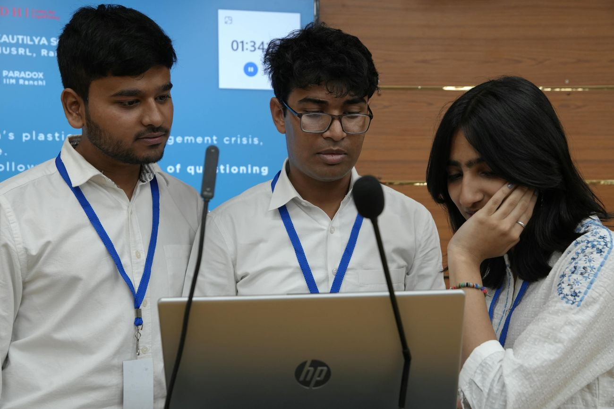
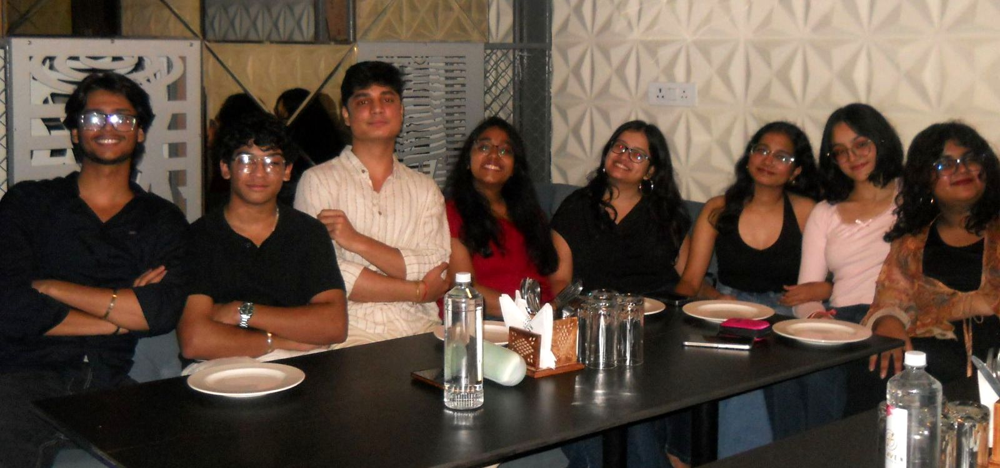

It began with a simple yet unconventional idea.
Founded in 2024, Polytrics set out to create a space for meaningful conversations around public policy, law, governance, and society within a business school.
Through debates, discussions, knowledge-sharing sessions, and conversations that often went beyond the classroom, Polytrics brought together people with different perspectives and encouraged us to question, learn, and engage.

The family grew.
Year after year, the family has grown, both in numbers and in ambition.
From campus conversations to national and international events, Polytrics has continued to create platforms for collaboration, proving that some of the most meaningful ideas emerge when disciplines come together.
Tap any photo to see it larger.
But Polytrics has always been more than just a club.
It is the people, the late-night discussions, the arguments we did not agree on, the ideas we discovered along the way, and the friendships that made it all worthwhile.
To everyone who has been a part of this journey, in any way, thank you for making Polytrics what it is today.
Here’s to everything we have built, everything we have questioned, and everything that is still to come.
All in all, Polytrics fam forever.
